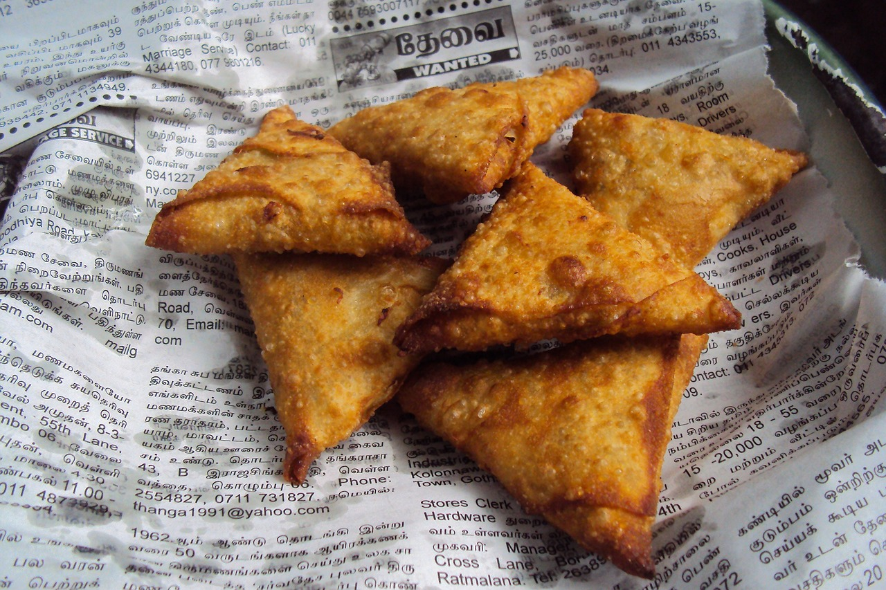

Samosas

Image credits:Mohamed Nuzrath
Description:
Samosas, iconic in Indian cuisine, are golden, triangular pastries with a crisp exterior enveloping a flavorful filling of spiced potatoes, peas, and aromatic spices. Deep-fried to golden perfection, these hand-held delights offer a harmonious blend of textures and tastes. Ideal for snacking or as an appetizer, samosas bring the essence of Indian street food to your table.
Ingredients:
- 2 cups all-purpose flour
- 1/4 cup ghee or vegetable oil
- 1/2 teaspoon salt
- 1/2 cup water (approximately, for dough)
- 2 cups boiled and mashed potatoes
- 1/2 cup boiled peas
- 1 tablespoon oil
- 1 teaspoon cumin seeds
- 1 tablespoon ginger-garlic paste
- 1/2 cup finely chopped onions
- 1/2 cup chopped cilantro
- 1 teaspoon garam masala
- 1 teaspoon ground coriander
- 1 teaspoon ground cumin
- Salt to taste
- Oil for frying
Steps:
-
Prepare the Dough:
Combine flour, salt, and ghee (or oil). Gradually add water and knead to form a smooth, pliable dough. Cover and let it rest for 30 minutes.
-
Make the Filling:
Heat oil in a pan; add cumin seeds and let them splutter. Add ginger-garlic paste and sauté until fragrant. Add onions and cook until golden brown. Stir in mashed potatoes, boiled peas, cilantro, garam masala, ground coriander, ground cumin, and salt. Mix well. Allow the filling to cool.
-
Assemble the Samosas:
Divide the dough into small balls and roll each into a thin oval shape. Cut each oval in half to form two semi-circles. Create a cone shape by folding the semi-circle and sealing the edge with a little water. Fill the cone with the potato-pea mixture and seal the open edge, forming a triangular shape.
-
Fry the Samosas:
Heat oil in a deep pan over medium heat. Fry the samosas until they turn golden brown and crispy. Remove and place on a paper towel to absorb excess oil.
-
Serve and Enjoy:
Serve the samosas hot with your favorite chutney or sauce. Enjoy the delightful combination of crispy pastry and spiced potato filling!